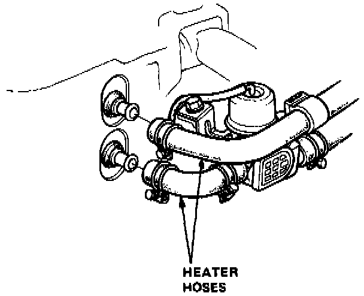
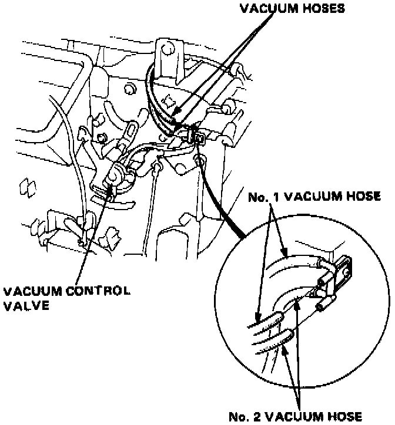
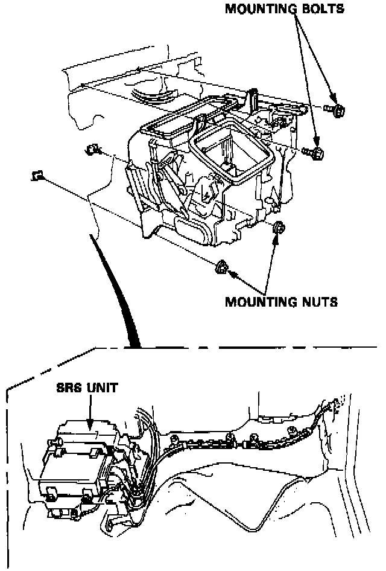
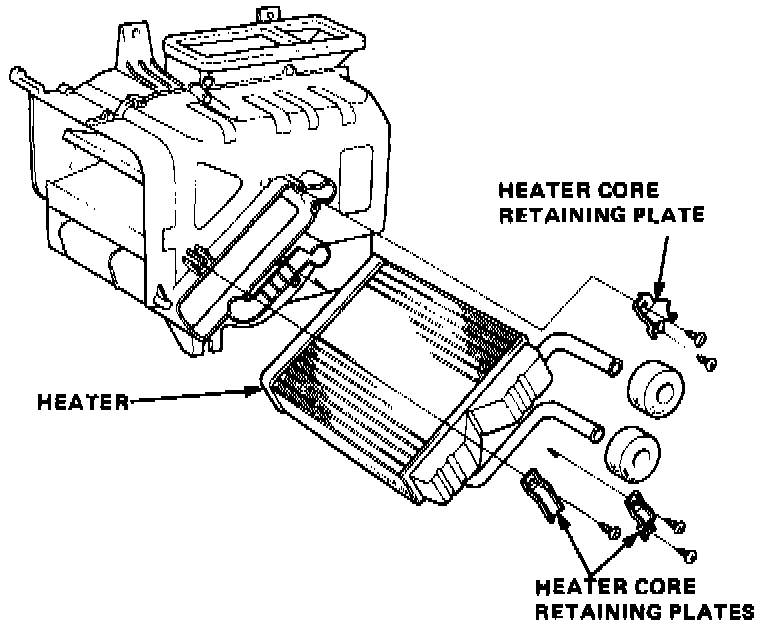
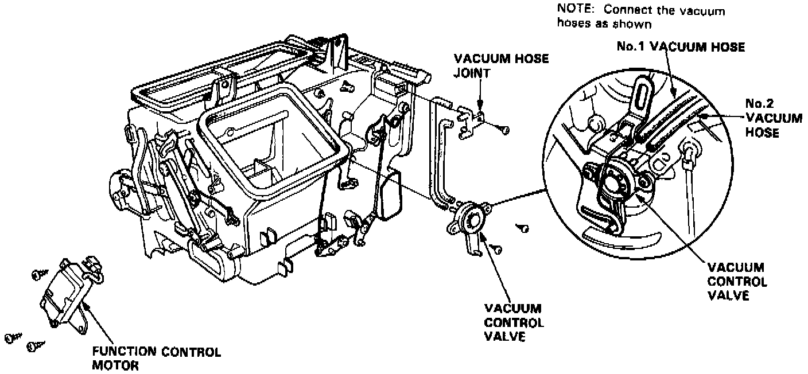

Heater Core: Service and Repair
NOTE: SRS wire harness is routed near the heater.WARNING: All SRS wire harness and connectors are colored yellow. Do not use electrical test equipment on these circuit.
CAUTION: Be careful not to damage SRS wire harness when servicing the heater.
HEATER ASSEMBLY REPLACEMENT
1. Drain coolant in the radiator.

2. Disconnect the heater hoses at the heater.
NOTE: Coolant will run out when the hoses are disconnected; drain it into a clean drip pan.
3. Remove the dashboard.

4. Disconnect the wire harness and vacuum hoses.

5. Remove the heater mounting bolts (2) and mounting nuts (2), then pull the heater away from the body.
Install in the reverse order of removal, and:
- Apply a sealant to the grommets.
- Do not interchange the inlet and outlet hoses. Make sure that the hose clamps are secure.
- Loosen the bleed bolt on the engine and refill the radiator and reservoir tank with the proper coolant mixture.
Tighten the bleed bolt when all the trapped air has escaped and coolant begins to flow from it.
- Connect all cables and make sure they are properly adjusted.
- Connect the vacuum hose properly and check the hose for bends, breakage, or pinching.
HEATER ASSEMBLY OVERHAUL
1. Remove the heater assembly as previously outlined.

2. Remove the self-tapping screws and retaining plates.
3. Pull out the heater core from the heater housing.

Remove the function control motor if necessary.
Remove the vacuum control valve and vacuum joint if necessary.
4. Install in the reverse order of removal and:
Loosen the bleed bolt on the engine and refill the radiator and reservoir tank with the proper coolant mixture. Tighten the bleed bolt when all the trapped air has escaped and coolant begins to flow from it.